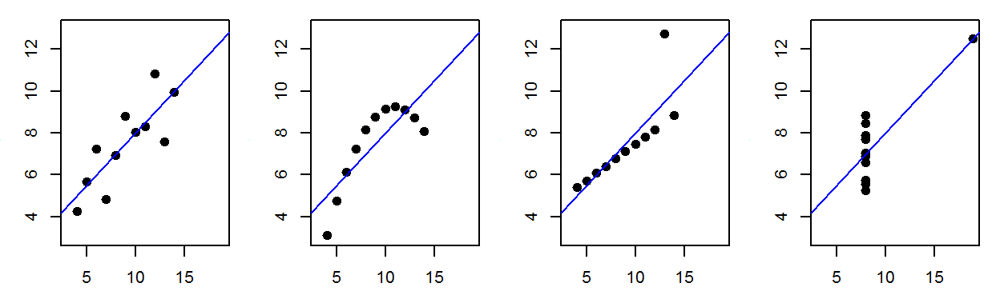
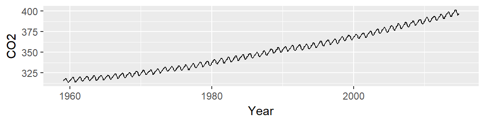
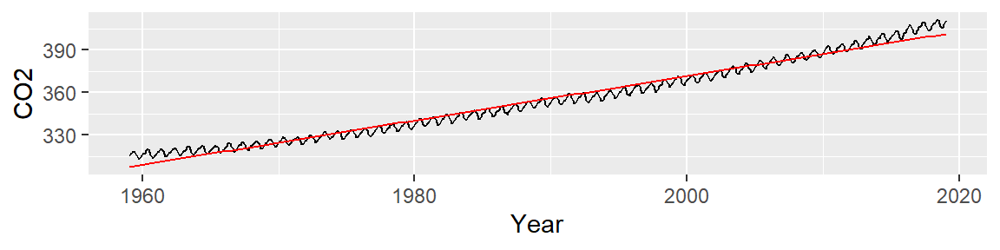
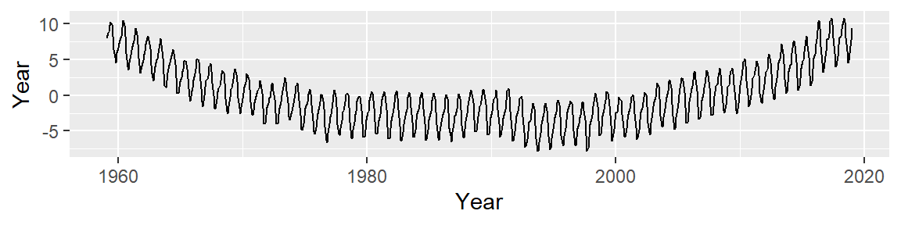
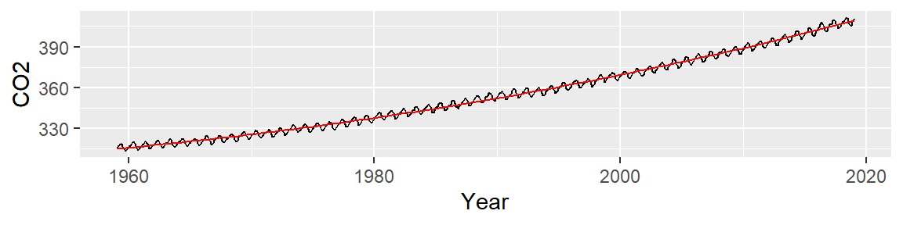
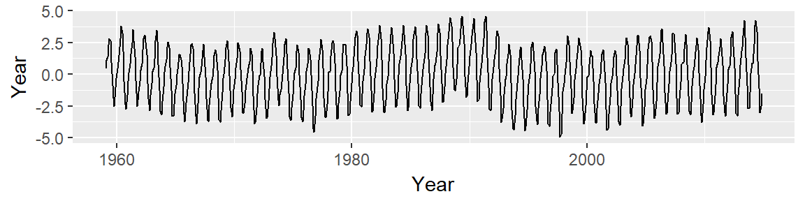
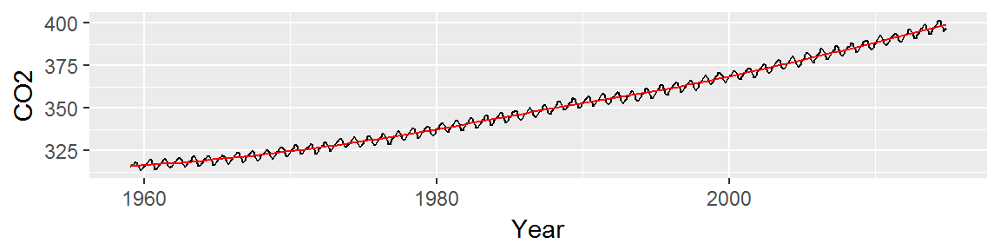
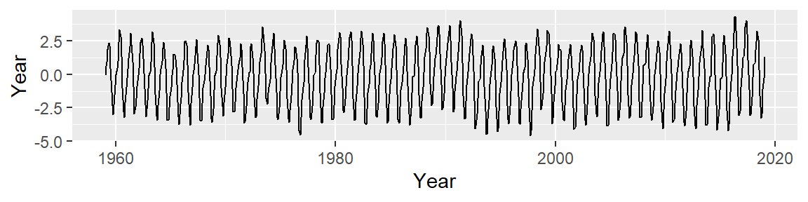
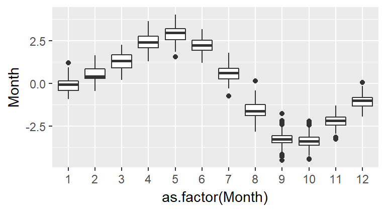
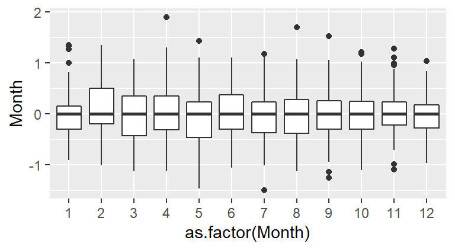

Things you will learn in this course
Exploratory Data Analysis (EDA)
What is EDA?
Traditional approaches to data analysis tend to be linear and unidirectional. It often starts with the acquisition or collection of a data set and ends with the computation of some inferential or confirmatory procedure.

Unfortunately, such practice can lead to faulty conclusions. The following datasets generate identical regression analysis results shown in the previous figure yet, they are all completely different!

The four plots represent Francis Anscombe’s famous quartet which he used to demonstrate the importance of visualizing the data before proceeding with traditional statistical analysis. Of the four plots, only the first is a sensible candidate for the regression analysis; the second dataset highlights a nonlinear relationship between X and Y; the third and fourth plots demonstrate the disproportionate influence of a single outlier on the regression procedure.
The aforementioned example demonstrates that a sound data analysis workflow must involve data visualization and exploration techniques. Exploratory data analysis seeks to extract salient features about the data (that may have otherwise gone unnoticed) and to help formulate hypotheses. Only then should appropriate statistical tests be applied to the data to confirm a hypothesis.
However, not all EDA workflows result in a statistical test: We may not be seeking a hypothesis or, if a hypothesis is sought we may not have the statistical tools necessary to test the hypothesis. It’s important to realize that most statistical procedures make restrictive assumptions about the data and the type of hypothesis being tested; data sets seldom meet those stringent requirements.
 “Exploratory data analysis is an attitude, a flexibility, and a reliance on display, NOT a bundle of techniques.”
“Exploratory data analysis is an attitude, a flexibility, and a reliance on display, NOT a bundle of techniques.”
–John Tukey
John Tukey is credited with having coined the term exploratory data analysis and with having written the first comprehensive book (Tukey, 19771) on that subject in 1977. The book is still very much relevant today and several of the techniques highlighted in the book will be covered in this course.
An EDA example: CO2 analysis
Let’s start off by plotting the atmospheric CO2 concentrations (in ppm) pulled from NOAA’s website

We note two patterns of interest: an overall upward trend, and a cyclical trend. Our first EDA task is to model the overall trend. We can attempt to fit a straight line to the data using a standard regression analysis procedure. The fitted line is displayed in red in the following plot.

Next, we subtract the modeled line from the CO2 data and plot the result–this difference is called the residual and can be thought of as representing what the linear model does not explain about the data.

An overall trend is still present, despite having attempted to control for it. This implies that our simple line model does not do a good job in smoothing out the overall trend. It appears that the overall trend is slightly convex and has a small peak around the 1990’s; we should try to fit the trend using a 3rd order polynomial of the form: \[ CO2_{trend} = a + b(Year) + c(Year^2) + d(Year^3) \]
The fitted line looks like this: 
Now, let’s look at the residuals:

This is an improvement over the simple line (which was a 1st order polynomial fit). So what we have learned so far is that the overall trend is not perfectly linear but instead follows a parabolic like trajectory with a small hump halfway across the time span. However, we can still make out a “W” shaped trend in the residual which can hamper our analysis of the oscillatory patterns in the data. We could play with different order polynomials to smooth the trend even further, but at this point, we may opt for a non-parametric fit. When the goal is to peel off one pattern to explore any underlying pattern we should not limit ourselves to parametric fits (which impose a mathematical model on our data) and instead explore non-parametric smoothing techniques that do not impose any structure on the data. An example of smoothing technique is the LOESS curve which is shown in the following figure.

At first glance, this may not look any different from our 3rd order polynomial. But the resulting residual suggests that the LOESS smooth did a good job in removing any overall trend in our batch of CO2 values.

Let’s now focus on the residual. Note the y axis values: they are three orders of magnitude less than the overall CO2 values. This indicates that the oscillating nature about the overall trend is relatively small (the CO2 values have a range of [313.26, 401.83] whereas the residuals have a range of [-4.49, 4.03].
Now, we may be tempted to fit a smooth (as Tukey would say) to the residuals but that may not prove to be fruitful. Instead let’s see if the oscillation follows a 12 month cycle. We’ll group all the (residual) values by month of the year. In other words, we will remove the year tag associated with each value and explore those values as a function of month alone. Each month’s batch of values is distilled into boxplots (one for each month of the year).

The box plot is a nifty visualization tool used to distill a batch of numbers into a measure of centrality and spread. The box in the graphic encompasses 50% of the data; the horizontal line in the box represents the median (a measure of centrality); the vertical lines above and below the box, the “whiskers”, encompass most of the remaining data; the black points extending beyond the “whiskers” are deemed outliers (i.e. values that are not typical of the batch).
It’s clear from the plot that the oscillation we observed in the CO2 plot follows a yearly cycle: a peak in the spring and a dip in the fall. This cycle is explained in part by the increased land mass in the northern hemisphere relative to the southern hemisphere. Because plants (and by extension photosynthesis) goes dormant during the winter months in the northern hemisphere, atmospheric CO2 is no longer being photosynthesized; this despite the southern hemisphere’s photosynthesis peak during the October-March period (a result of the southern hemisphere’s smaller land mass). Other factors such as increased CO2 emissions during the winter months may also contribute to the oscillatory nature of atmospheric CO2 concentrations.
Thus far, we have uncovered two patterns of interest: an overall trend and a cyclical component. Note that to effectively explore the cyclical pattern we had to de-trend (or smooth) the data. Next, we should smooth the seasonal component of the data to see if another pattern emerges. We may, for example, smooth the data by subtracting the monthly median from each residual leaving us with the next batch of residual values to explore:

Note that now, all the boxplots are lined up along their median values. We are now exploring the data after having accounted for both overall trend and seasonality. What can be gleaned from this dataset? We may want to explore the skewed nature of the residuals in February, or the narrower range of CO2 values for the fall months, for example.
It’s important to realize that this is one of many ways in which we could have proceeded with the analysis. For example, we could have started off the analysis by removing the seasonal component from the data, then analyze the long term trend. This is the approach taken by William Cleveland on page 165 of the course’s text2.
Data analysis is an interplay between fitting the data and plotting the residuals. The goal is to extract all meaningful patterns from the data and to be left with residuals that are randomly distributed around a value of 0. Some may caution that this is tantamount to data snooping or forcing the data to reveal what we want it to reveal. While there might be some truth to this, think of the alternative: had we not graphically inspected the CO2 data, how could we have uncovered all of the interesting features of the data? And without knowing how the data behaves, how would we know what statistical procedures would be adequate for the analysis?
The role of graphics in EDA
The preceding example highlights the importance of graphing data. A core component of this course is learning how to construct effective data visualization tools for the purpose of revealing patterns in the data. The graphical tools must allow the data to express themselves without imposing a story.
 “Visualization is critical to data analysis. It provides a front line of attack, revealing intricate structure in data that cannot be absorbed in any other way.”
“Visualization is critical to data analysis. It provides a front line of attack, revealing intricate structure in data that cannot be absorbed in any other way.”
–William S. Cleveland
William Cleveland has written extensively about data visualization and has focused on principles founded in the field of cognitive neuroscience to improve data graphic designs. His book, Visualizing Data, is a leading authority on statistical graphics and, despite its age, is as relevant today as it was two decades ago. It focuses on graphical techniques (some newer than others) designed to explore the data. This may differ from graphics generated for public dissemination which benefits from another form of data visualization called information visualization (or infovis for short). Infovis will not be covered in this course (though there is some overlap between the two techniques). For a good discussion on the differences between statistical graphics and infovis see the 2011 Statistical Computing and Graphics Newsletter Statistical Graphics and InfoVis: separated Twins at Birth?3
Cleveland has also contributed a very important tool to EDA: the LOESS curve (which was demonstrated in the CO2 data example). The LOESS curve will be used extensively in this course.
The LOESS is one of many fitting options used in smoothing (or detrending) the data. Others include parametric models such as the family of linear polynomials (we explored two of them in the CO2 example) and Tukey’s suite of smoothers notably the running median and the 3RS3R.
We need a good data analysis environment
Effective EDA requires a flexible data analysis environment that does not constrain one to a limited set of data manipulation procedures or visualization tools. After all, would any good writer limit herself to a set of a hundred pre-built sentences? Of course not–we would be reading the same novels over and over again! So why would we limit ourselves to a limited set of pre-packaged data analysis procedures? EDA requires an arsenal of data analysis building blocks much like a good writer needs an arsenal of words. Such an environment must provide us with flexible data manipulation capabilities, a flexible data visualization environment and access to a wide range of statistical procedures. A scripting environment, like R, offers such an environment.
The data analysis environment should also be freely available, and its code open to the public. Free access to the software allows anyone with the right set of skills to share in the data analysis, regardless of any budgetary constraints. The open source nature of the software ensures that any aspect of the code used for a particular task can be examined when additional insight into the implementation of an analytical/numerical method if needed. Deciphering code may not be a skill available to all researchers, however, if the need to understand how a procedure is implemented is important enough, an individual with the appropriate programming skills can be easy to come by, even if it’s for a small fee. Open source software also ensures that the underlying code used to create the executable application can be ported to different platforms or different operating systems (even though this too may require some effort and modest programming skills).
The workhorse: R
R is an open source data analysis and visualization programming environment whose roots go back to the S programming language developed at Bell Laboratories in the 1970’s by John Chambers. It will be used almost exclusively in this course.
The friendly interface: RStudio
RStudio is an integrated development environment (IDE) to R. An IDE provides a user with an interface to a programming environment (like R) by including features such as a source code editor (with colored syntax). RStudio is not needed to use R (which has its own IDE environment–albeit not as nice as RStudio’s), but makes using R far easier. RStudio is an open source software, but unlike R, it’s maintained by a private entity which also distributes a commercial version of RStudio for businesses or individuals needing customer support.
Data manipulation
The importance of data visualization was already discussed in an earlier section. But before one can begin plotting data, one must have a data table in a form ready to be plotted. In cases where the data table consists of just two variables (columns), little data manipulation may be needed, but in cases where data tables consist of tens or scores of variables, data manipulation, subsetting and/or reshaping may be required. Tackling such a task can be challenging in a point and click spreadsheet environment and can introduce clerical error. R offers an array of data table manipulation tools and packages such as reshape2 and dplyr. Rurthermore, R’s scripting environment enables one to read through each step of a manipulation procedure in a clear and unambiguous way. Imagine the difficulty in properly documenting all the point-and-click steps followed in a spreadsheet environment.
For example, a data table of grain production for North America may consist of six variables and 1501 rows. The following table shows just the first 7 lines of the 1501 rows.
| Country | Crop | Information | Year | Value | Source |
|---|---|---|---|---|---|
| Canada | Barley | Area harvested (Ha) | 2012 | 2060000.00 | Official data |
| Canada | Barley | Yield (Hg/Ha) | 2012 | 38894.66 | Calculated data |
| Canada | Buckwheat | Area harvested (Ha) | 2012 | 0.00 | FAO estimate |
| Canada | Canary seed | Area harvested (Ha) | 2012 | 101900.00 | Official data |
| Canada | Canary seed | Yield (Hg/Ha) | 2012 | 12161.92 | Calculated data |
| Canada | Grain, mixed | Area harvested (Ha) | 2012 | 57900.00 | Official data |
There are many ways in which we may want to summarize the data table. We could, for example, want to compute the total Barley yield for Canada by year for the years ranging from 2005 and 2007. In R, this would be done in just a few lines of code:
library(dplyr)
dat2 <- fao %>%
filter(Information == "Yield (Hg/Ha)", Crop=="Barley", Country=="Canada",
Year >= 2005, Year <=2010) %>%
group_by(Year) %>%
summarise(Barley_yield = round(median(Value))) | Year | Barley_yield |
|---|---|
| 2005 | 32134 |
| 2006 | 29703 |
| 2007 | 27476 |
| 2008 | 33646 |
| 2009 | 32620 |
| 2010 | 31859 |
Creating the same output in a spreadsheet environment would take a bit more effort and its workflow would be less transparent.
Reproducible analysis
Data table manipulation is inevitable in any data analysis workflow and, as discussed in the last section, can be prone to clerical errors if performed in a point-and-click environment. Furthermore, reproducing a workflow in a spreadsheet environment can be difficult unless each click and each copy-and-paste are meticulously documented. And even if the documentation is adequate, there is no way of knowing if the analyst followed those exact procedures (unless his mouse and keyboard moves were recorded). However, with a scripting environment, each step of a workflow is clearly and unambiguously laid out. This leads to another basic tenet of the scientific method: reproducibility of the workflow.
Reproducible research lends credence to scientific work. The need for reproducibility is not limited to data collection or methodology but includes the actual analytical workflow that generated the results including data table manipulation and implementation of statistical procedures.
Data analysis can be complex. Each data manipulation step that requires human interaction is prone to clerical error. But error can also manifest itself in faulty implementation of an analytical procedure—both technical and theoretical. Unfortunately, the workflows are seldom available in technical reports or peer-reviewed publications where the intended audience is only left with the end product of the analysis.
 “… a recent survey of 18 quantitative papers published in Nature Genetics in the past two years found reproducibility was not achievable even in principle for 10.”
“… a recent survey of 18 quantitative papers published in Nature Genetics in the past two years found reproducibility was not achievable even in principle for 10.”
–Keith A. Baggerly & Kevin R. Coombes4
Unfortunately, examples of irreproducible research are all too common. An example of such was reported by the New York Times in an article titled How Bright Promise in Cancer Testing Fell Apart. In 2006, researchers at Duke had published a paper in Nature Medicine on a breakthrough approach to fighting cancer. The authors’ research suggested that genomic tests of a cancer cell’s DNA could be used to target the most effective chemotherapy treatment. This was heralded as a major breakthrough in the fight against cancer. Unfortunately, the analysis presented by the authors was flawed. Two statisticians, Dr. Baggerly and Dr. Coombes, sought to replicate the work but discovered instead that the published work was riddled with problems including mis-labeling of genes and confounding experimental designs. The original authors of the research did not make the analytical workflow available to the public thus forcing the statisticians to scavenge for the original data and techniques. It wasn’t until 5 years later, in 2011, that Nature decided to retract the paper because they were “unable to reproduce certain crucial experiments”.
Many journals now require or strongly encourage authors to “make materials, data and associated protocols promptly available to readers without undue qualifications” (Nature, 2014). Sharing data file is not too difficult, but sharing the analytical workflow used to generate conclusions can prove to be difficult if the data were run though many different pieces of software and point-and-click procedures. An ideal analytical workflow should be scripted in a human readable way from beginning (the moment the data file(s) is/are read) to the generation of the data tables or data figures used in the report of publication. This has two benefits: elimination of clerical errors (associated with poorly implemented point-and-click procedures) and the exposition of the analytical procedures adopted in the workflow.
Creating dynamic documents using R Markdown
Another source of error in the write-up of a report or publication is the linking of tables, figures and statistical summaries to the write-up. Typically, one saves statistical plots as image files then loads the image into the document. However, the figures may have gone through many different iterations resulting in many different versions of the image file in a working folder. Add to this many other figures, data table files and statistical results from various pieces of software, one quickly realizes the potential for embedding the wrong image files in the document or embedding the wrong statistical summaries in the text. Furthermore, the researcher is then required to properly archive and document the provenance of each figure, data table or statistical summary resulting in a complex structure of files and directories in the project folder thus increasing the odds of an irreproducible analysis.
Confining all of the analysis to a scripting environment such as R can help, but this still does not alleviate the possibility of loading the wrong figure into the document, or forgetting to update a statistical summary in the text when the original data file was revised. A solution to this potential pitfall is to embed the actual analysis and graphic generation process into the document–such environments are called dynamic documents. In this course, we will use the R Markdown authoring tool which embeds R code into the document. An example of an R Markdown document is this write-up where both the CO2 data analysis and the data manipulation examples were generated using R and whose code was embedded in this R Markdown document. You can view the contents of the R Markdown file here.
Tukey, John W. Exploratory Data Analysis. 1977. Addison-Wesley.↩
Cleveland, William S. Visualizing Data. 1993. Hobart Press.↩
Lewin-Koh, Nicholas and Theus, Martin (Eds). Statistical Graphics and InfoVis: separated Twins at Birth? ASA Statistical Computing and Graphics Newsletter, 2011.↩
Baggerly, Keith A. and Coombes, Kevin R. Deriving Chemosensitivity from Cell Lines: Forensic Bioinformatics and Reproducible Research in High-Throughput Biology. The Annals of Applied Statistics, vol.3, no.4, pp. 1309-1334. 2009.↩
 Manny Gimond (2017)
Manny Gimond (2017)